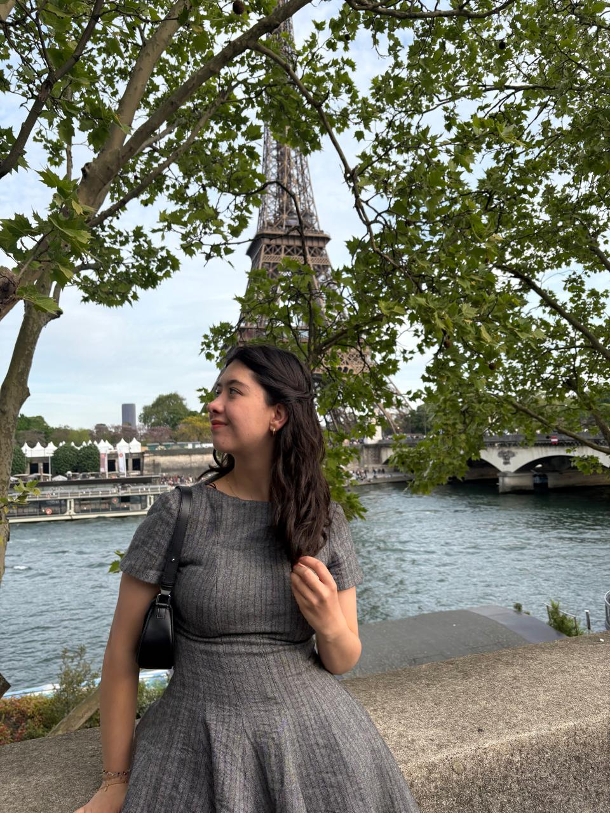

El siguiente capítulo

Hay una foto mía en París mirando el Sena. No recuerdo qué estaba pensando en ese momento exacto, pero sí recuerdo la sensación: algo estaba terminando y algo estaba empezando, y los dos sucedían al mismo tiempo.
El TAC me devolvió esa sensación. No como un cierre, sino como un punto de pausa real — el primero que me permití en mucho tiempo. Aprendí a ponerle nombre a lo que me frena: Alvin, el miedo a los pasos concretos, la brecha entre las metas grandes y las decisiones pequeñas que las construyen. Aprendí también a reconocer lo que me sostiene: la rutina, la autocrítica que sirve para ajustar y no para quedarse en culpa, el hábito de tomar un día a la vez sin soltar de vista adónde voy.
En junio empiezo en Evertec. Es el primer capítulo completamente profesional de mi historia, y llega en un momento en el que ya me conozco lo suficiente para dar el siguiente paso, pero todavía sigo cambiando.
Sigo siendo una mujer en construcción.
Y eso ya no me asusta tanto.